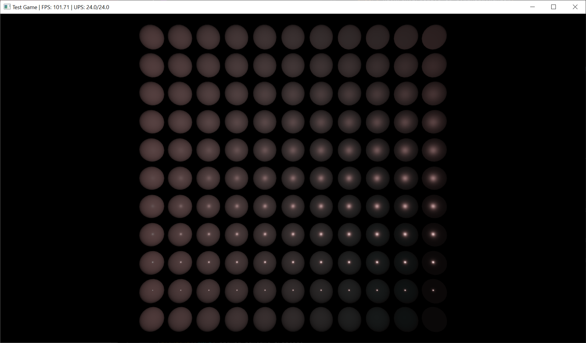
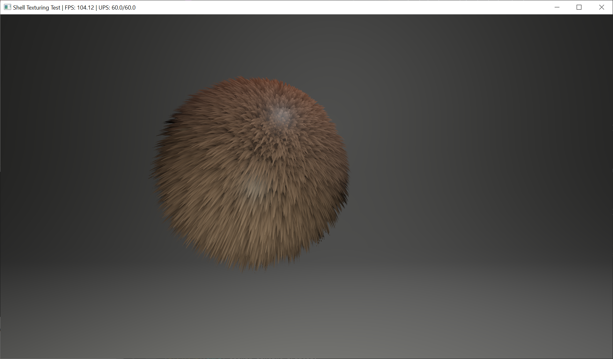
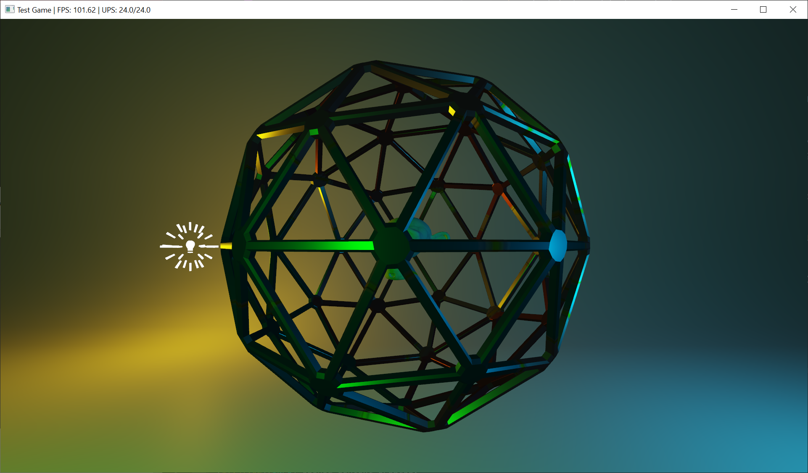
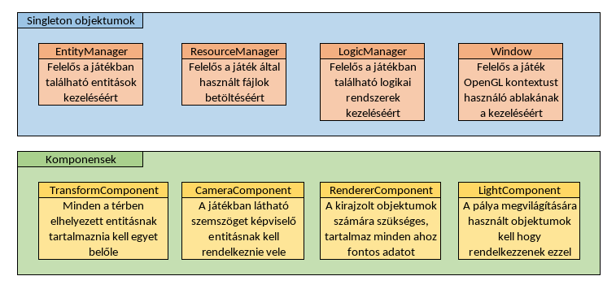

Vissza
KRTN Brigád - Szoftver követelmény specifikáció
Software Requirement Specification
Készítették:
- Csákó Balázs
- Bodnár Gergely
- Kola Sándor
- Kiss Konrád Soma
Tartalomjegyzék
Table of contents
1. Bevezetés
2. Áttekintés
3. A rendszer funkciói
3.1. Első követelmény
3.2. Második követelmény
3.3. Harmadik követelmény
3.4. Harmadik követelmény
3.5. Harmadik követelmény
4. Használhatóság
4.1. Betanulás nehézsége
4.2. Összehasonlítás más módszerekkel
4.3. Betanulást segítő eszközök
4.4. Más alkalmazások, amelyeket használunk a fejlesztés során
5. Megbízhatóság
6. Teljesítmény
7. Támogatottság
8. Tervezési korlátozások
9. Online dokumentáció
10. Felhasznált kész komponensek
11. Interfészek
11.1. Felhasználói interfészek
11.2. Hardver interfészek
11.3. Szoftver interfészek
12. Alkalmazott szabványok
12.1. Kötelezően alkalmazandó szabványok
12.2. Választás alapján alkalmazott szabványok
13. Mellékletek
1. Bevezetés
Introduction
Mi itt a KTRN brigád csapatával egy multi-purpose 3D-s játékmotort próbálunk készíteni OpenGL és Java használatával.
Ez a dokumentum ennek a projektnek a megfelelő megtervezését alapozza meg.
2. Áttekintés
Overview
A játékmotor kigondolásakor a következő szempontokat vettük figyelembe:
- Java nyelven még nincs sok konkurencia a téren.
- A konkurencián belül olyan pedig még annyira se, amely pont azokat a funkciókat tartalmazza amelyeket mi szeretnénk.
- OpenGL-t használunk a 3D-s grafikához.
- A játékmotorunknak több platformon is működnie kell.
- Gyorsnak kell maradnia régebbi gépeken is.
3. A rendszer funkciói
Specific Requirements
A játékmotorunknak a következő funkciókat kell tudnia:
- Jó minőségű 3D-s grafika megjelenítése.
- 3D-s modellek, textúrák, animációk, hangok natív támogatása.
- ECS (Entity Component System) architektúra használata.
- Könnyű bővíthetőség a modolhatóság érdekében.
- Beépített állapotmentés/fájlrendszerkezelés.
3.1. Első követelmény: Jó minőségű 3D-s grafika megjelenítése.
First Requirement: Good quality 3D graphics
Ez a követelmény egy elég tágas fogalom, de a mi esetünkben a következőket jelenti:
- PBR, azaz Physically Based Rendering alkalmazása, azaz a fények és árnyékok fizikai alapokon való számítása.
- Ehhez minden anyag rendelkezik egy diffuse, normal, metallic, roughness és emissive textúrával, amelyek gyakorlatilag a standard a jelenlegi magas minőségű 3D-s grafikát használó játékokban.
- Ezentúl egyszerre akarunk alkalmazni Real-Time és Baked megvilágítást is, amelyeket a játékfejlesztők tudnak majd kontrollálni.
- Módosítható Render-Pipeline, amellyel a fejlesztők képesek lesznek egyéb effektusokat, vagy Post-Processing effektusokat hozzáadni a játékhoz.
3.2. Második követelmény: 3D-s modellek, textúrák, animációk, hangok natív támogatása.
Second Requirement: Native support for 3D models, textures, animations, sounds.
Ez alatt arra kell gondolni, hogy a manapság elterjedt és gyakran alkalmazott formátumakot minimális konverzióval,
vagy teljesen konverziómentes módon képes kell hogy kezelje. Ehhez az ASSIMP nevű könyvtárat fogjuk használni,
amely képes a legtöbb 3D-s formátumot kezelni. Ezentúl az STBI könyvtárat fogjuk használni a képek betöltéséhez,
amely képes a legtöbb képformátumot kezelni. A többi fájt, mint a hangokat és animációkat,
még nem döntöttük el, hogy milyen formátumban fogjuk tárolni.
3.3. Harmadik követelmény: ECS (Entity Component System) architektúra használata.
Third Requirement: Use of ECS (Entity Component System) architecture.
Az ECS architektúra lehetővé teszi a fejlesztők számára egy újrahasználható, könnyen bővíthető, és könnyen
karbantartható kódbázis létrehozását. Az ECS architektúra lényege, hogy a játékban minden objektumot, vagyis
entitást komponensekkel ruházunk fel, amelyek eldöntik a szerepét. Ezek újrahasználhatóságának köszönhetően nem
kell minden objektumot külön-külön megírni. Például ha van egy Rajzoló komponensünk, akkor a játékban minden
objektumot, amelyet meg szeretnénk jeleníteni, felruházunk ezzel a komponenssel, és a játék automatikusan
kirajzolja azokat. Ezen kívül a komponenseknek lehetnek gyerekeik, amelyek további funkciókat adnak a szülő
komponensnek. Például ha van egy Fizika komponensünk, akkor a játékban minden objektumot, amelyet meg szeretnénk
mozgatni, felruházunk ezzel a komponenssel, és a játék automatikusan mozgatja azokat.
3.4. Negyedik követelmény: Könnyű bővíthetőség a modolhatóság érdekében.
Fourth Requirement: Easy expandability for modding purposes.
A játékmotorunknak modolhatónak kell lennie, azaz a játékfejlesztőknek könnyen kell tudniuk bővíteni a játékot.
Ehhez a játékmotorunknak egy olyan API-t kell biztosítania, amelyen keresztül a játékfejlesztők képesek lesznek
a játékot bővíteni a forráskód módosítása nélkül. Ez azt jelenti hogy amennyiben a használható komponensek és
rendszerek már készen állnak, azok felhasználhatóvá kell hogy váljanak futásidő során betöltésre kerülő modulok
és szkriptek számára. A pályák, objektumok és egyéb elemek betöltéséhez egy olyan fájlformátumot kell
biztosítanunk, amelyben ezek az elemek leírhatóak.
3.5. Ötödik követelmény: Beépített állapotmentés/fájlrendszerkezelés.
Fifth Requirement: Built-in state saving/file system management.
Az előző pontra építve, a játékmotorunknak beépített fájlrendszerkezelőt kell tartalmaznia, amely képes
kezelni a játékban használt fájlokat, és a játékfejlesztőknek lehetőséget kell biztosítania a játékállapot
mentésére, és betöltésére. Ez azt jelenti, hogyha például a játékos több Entitásból épül fel, akkor azokat
egy fájl formájában el kell tudni menteni, és később vissza kell tudni tölteni.
4. Használhatóság
Usability
4.1. Betanulás nehézsége
Learning difficulty
A játékmotorunkat úgy tervezzük, hogy a játékfejlesztőknek ne legyen nehéz megtanulni használni.
Ezért egy könnyen érthető, tisztán angol nyelvű JavaDocs dokumentációval fog rendelkezni a motor.
Ezentúl a motorhoz több példaprojekt is elérhető lesz, amelyek bemutatják a motor használatát.
A motort úgy fogjuk kialakítani, hogy hasonlítson más, már a piacon lévő játékmotorokra, így a
játékfejlesztőknek nem kell teljesen új módszereket megtanulniuk.
4.2. Összehasonlítás más módszerekkel
Comparison with other methods
A játékmotorunk a piacon már kitesztelt, alkalmazott és jól bevált módszereket fog alkalmazni.
Ennek köszönhetően a tanulási-görbe nem lesz nagyon meredek.
4.3. Betanulást segítő eszközök
Learning aids
Idézet a 4.1.-es pontból:
"A játékmotorunkhoz egy könnyen érthető, tisztán angol nyelvű JavaDocs dokumentáció lesz elérhető.
Ezen kívül a motorhoz több példaprojekt is elérhető lesz, amelyek bemutatják a motor használatát."
4.4. Más alkalmazások, amelyeket használunk a fejlesztés során
Other applications we use during development
A játékmotorunk fejlesztése során a következő alkalmazásokat használjuk:
-
IntelliJ IDEA - A játékmotorunk fejlesztéséhez használt IDE.
Könnyen elérhető, gyakran használt és jól bevált IDE.
-
Blender - A játékmotorunkhoz használt 3D-s modellek készítéséhez
használt alkalmazás. Ingyenes, remekül támogatja a kívánt fájlformátumokat, és már a modellek anyagait is
beállíthatjuk szerkesztés közben benne.
5. Megbízhatóság
Reliability
-
Rendelkezésre állás: A teljes használhatóság korlátozott lesz abban, hogy a fejlesztőknek melyek lesznek
azok a dolgok, amelyeket maguknak kell megoldaniuk, de ez projektenként eltér szóval egységes mércét nem
tudunk alkalmazni.
-
MTBF: (Mean Time Between Failures) A játékmotorunknak nem lesznek olyan részei, amelyek meghibásodhatnak
ideális körülmények között, így ezt a metrikát nem tudjuk alkalmazni.
-
MTTR: (Mean Time To Repair) Amennyiben a játékmotor hibásodik meg, a fejlesztők számára a könyvtár frissítésére
lesz szükség, amelyet a Maven Package Manager segítségével tudnak majd elvégezni. Mivel a tervezési fázis során
nem tudjuk kitapasztalni hogy mennyi időt vehetnek igénybe az esetlegesen létrejövő hibák javítása, ezért ezt a
metrikát sem tudjuk alkalmazni.
-
A rendszer eredményeinek pontossága, felbontása: A játékmotorunk pontosságát az fogja befolyásolni, hogy a projektben
milyen Tick-Rate -et szabunk meg, azaz milyen gyakran frissülnek a játékban elérhető rendszerek. Ezentúl a fizikai rendszert
determinisztikusnak fogjuk tervezni, azaz a játék ugyanazon a kiindulási állapotokból ugyanazokat az eredményeket fogja
produkálni.
6. Teljesítmény
Performance
A játékmotorunk teljesítményét a következők fogják befolyásolni:
- A játékmotorunknak több platformon is működnie kell.
- Gyorsnak kell maradnia régebbi gépeken is.
Ezek alapján az alábbi értékek várhatóak:
-
Válaszidők: A játékmotorunk úgy lesz felkészítve, hogy amennyiben megfelelő módon van alkalmazva a
játékfejlesztők által, akkor a válaszidők minimálisak lesznek. Ez bitosítva lesz a UI könyvtárunkban,
a logikai rendszerek alkalmazásában és a fizikai rendszerünkben is.
-
Áteresztőképesség (fps, tps): Ezek a metrikák ideális körülmények között a meglehetősen magas értéket
fogják elérni, mivel a játékmotorunkat úgy tervezzük, hogy a játékfejlesztőknek ne kelljen túl sokat
törődniük a teljesítménnyel. Amennyiben megfelelően a dokumentáció szerint használják a játékmotorunkat,
akkor performans marad a játék.
-
Kapacitás (max entitások, max pályaméret): A játékmotorunk korlátait a 32-bites floating point számok
határozzák meg a pályaméret során, és a 8-karakteres alfanumerikus azonosítók a maximális entitásszám
során. Ezek a korlátok hozzávetőleg megfelelnek a jelenlegi játékmotorok korlátainak.
-
Erőforrás igények: A játékmotorunkat úgy próbáljuk megtervezni, hogy a lehető legkevesebb erőforrást
használja. Ennek köszönhetően elérhető, hogy régebbi hardvereken, és a dedikált grafikus kártyával nem
rendelkező gépeken is futtatható legyen. Természetesen az igények ennek ellenére főként még mindig az
adott játékfejlesztőtől függenek.
7. Támogatottság
Supportability
A játékmotorunk támogatottságát a következők fogják befolyásolni:
-
Elnevezési konvenciók: A játékmotorunkban a Java nyelvben gyakran haszált elnevezési konvenciókat fogjuk
használni, amely a camelCase változók esetén, és a PascalCase osztályok és metódusok esetén.
-
Üzemeltetés: A játéknak a megfelelő Java verzióra lesz szüksége azon gépeken, amelyeken futtatni kívánjuk.
Ezen kívül a játékmotorunknak a megfelelő OpenGL verzióra lesz szüksége, amelyet az Apple gépek korlátai miatt a 3.3-ra
fogunk korlátozni.
-
Naplózás: A játékmotorunk rendelkezni fog egy Logger osztállyal, amely a játékfejlesztők számára lehetővé teszi
a játék futása során fellépő hibák naplózását. Ezen naplókat hibajelentés céljából el lehet majd küldeni a
játékfejlesztőknek.
8. Tervezési korlátozások
Design constraints
A játékmotorunk tervezési korlátozásait a következők fogják befolyásolni:
-
A játékmotorunkat Java nyelven fogjuk megírni, amelynek köszönhetően a játékfejlesztőknek nem kell
külön platformokra külön-külön megírniuk a játékot. Viszont ez a korlát azt is jelenti, hogy a játék
nem lesz olyan gyors, mint egy C++ nyelven megírt játék, illetve nem minden mobil platformot fog támogatni.
-
A játékmotorunkat OpenGL használatával készítjük, amely elérhető rengeteg eszközön, viszont a vele elérhető
maximális teljesítmény nem olyan magas, mint például a Vulkan API-é.
-
Az ECS rendszer azt igényli, hogy a motor újrafordításra kerüljön minden egyes új komponens hozzáadásakor.
Ez a korlát azt jelenti, hogy a játékfejlesztőknek nem lesz lehetőségük a játék futása során új komponenseket
hozzáadni a játékhoz, ezentúl ez lassíthatja a játékfejlesztést.
9. Online dokumentáció
Online documentation
A játékmotorunkhoz egy online dokumentáció lesz elérhető, amelyet elsősorban JavaDocs formájában fogunk
biztosítani. Ezen kívül a játékmotorunkhoz több példaprojekt is elérhető lesz, amelyek bemutatják a
motor használatát.
10. Felhasznált kész komponensek
Used components
A játékmotorunkhoz a következő kész komponenseket fogjuk felhasználni:
Az LWJGL a következő licenc alatt érhető el: LWJGL License
Ennek köszönhetően a játékmotorunk ingyenesen alkalmazhatja ezt a könyvtárat.
A GSON a következő licenc alatt érhető el: Apache-2.0 license
Ez a licensz is ingyenesen alkalmazható a játékmotorunkban.
11. Interfészek
Interfaces
11.1. Felhasználói interfészek
User interfaces
A játékmotor rendelkezni fog egy Immadiate Mode UI könyvtárral amely szerkesztés közbeni UI elemeket fog
biztosítani a játékfejlesztők számára. Ezentúl a játékmotorunk rendelkezni fogy egy Retained Mode UI könyvtárral
amely egy robosztusabb rendszer a már kész játékban használható UI elemekhez.
11.2. Hardver interfészek
Hardware interfaces
A játékmotorunk hardver iterfészek terén az OpenGL-t fogja használni, amely a legtöbb eszközön elérhető.
Ezentúl egy alapvető, a futtatható alkalmazás mappájában történő fájlkezelőt fogunk biztosítani a játékfejlesztők
számára, amely a játékban használt fájlok kezelésére lesz képes.
11.3. Szoftver interfészek
Software interfaces
A játékmotorunk a már előző pontokban felsorolt könyvtárak interfészeit fogja használni.
12. Alkalmazott szabványok
Applied standards
12.1. Kötelezően alkalmazandó szabványok
Mandatory standards
A játékmotorunk a következő szabványokat fogja alkalmazni:
12.2. Választás alapján alkalmazott szabványok
Choice-based standards
A játékmotorunk a következő szabványokat fogja alkalmazni:
13. Mellékletek
Attachments
Képek egy már működő prototípusról:

Egy ábra a PBR anyagról. Balról jobbra haladva a fémesség nő, felülről lefelé haladva a simaság.

Egy shell texturing segítségével készült szőr rajzolási teszt.

Egy bonyolultabb pályáról készült megvilágítási teszt.

A motorban már elérhető és jelenleg használt fontosabb objektumok.